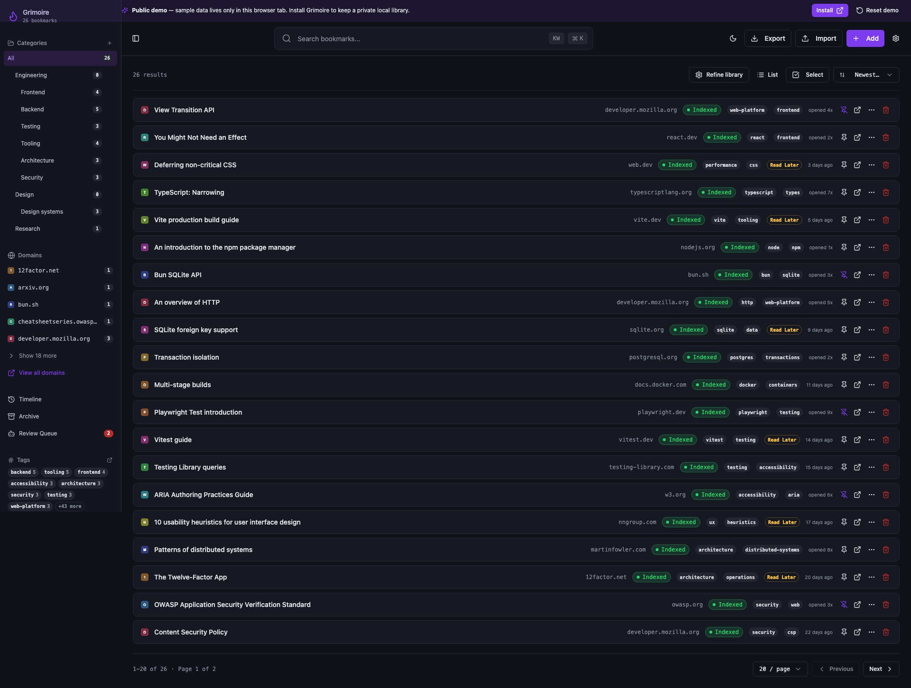
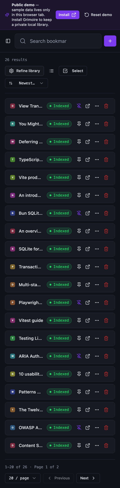
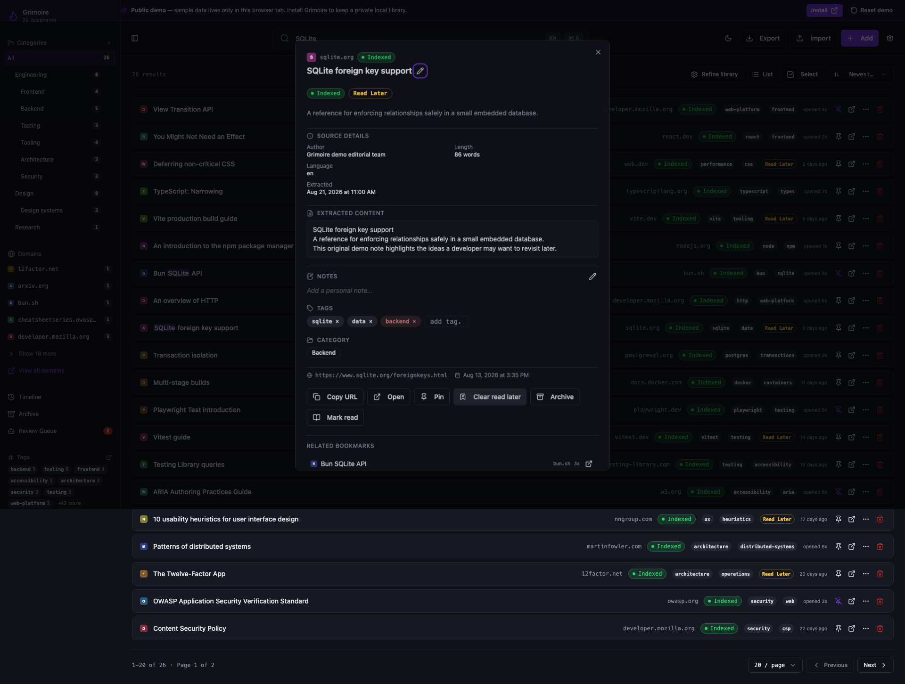

Grimoire Task Report
Public Demo Mode

Before
Grimoire's real frontend expected a local loopback daemon and SQLite-backed data. There was no static client-only profile that visitors could open without installation.
Problem
A public UI preview must demonstrate real navigation and data behavior without exposing the daemon, implying hosted storage, making provider calls, or silently pretending that local-only actions succeeded.
Changes Added
- Added a demo build profile with an injectable API transport, same-origin
/__apibase, dynamic demo-router loading, and a bundle guard for loopback daemon URLs. - Added 30 curated synthetic bookmarks with real reference URLs, original summaries, categories, tags, timeline events, suggestions, detail content, related-bookmark matching, and JSON/CSV export.
- Added persistent demo framing, install guidance for local-only actions, read-only demo settings, disabled app lock behavior, reset cleanup, no sidebar cookie writes, and local inline favicons with no third-party image requests.
- Added focused router tests, hermetic Playwright demo tests, a CI demo job, README/security-boundary notes, and desktop/narrow/detail evidence.
Result
The demo now loads 26 active fixture bookmarks without Bun or SQLite, supports search, filters, deep links, detail content, related items, export, and session-only actions, and clearly routes local-only actions toward installation. Reset clears the in-memory state and known demo-local storage keys.
Verification
npm test -- --run src/demo/api/router.test.ts— 5 tests passed.npm run build:demoandnpm run verify:demo-bundle— passed; no127.0.0.1:3210orlocalhost:3210found indist/.npm run test:e2e:demo— 4 tests passed for browsing/search/detail, deep-link/export, reset cleanup, and install gating for Settings/category/tag actions; the first flow also asserts no AI setup prompt and no sidebar cookie, and that all HTTP(S) requests stay on the demo origin.- Fresh Playwright captures were inspected at desktop 1920px, narrow 390px @2x, and detail-drawer states.
Additional screenshots


Implementation notes
The daemon remains loopback-only and unchanged. Launch hostname, CTA destination, indexing policy, analytics, fixture ownership, accessibility/performance gates, static-host fallback configuration, kill-switch ownership, and the full Playwright mock-daemon adapter promotion remain explicit follow-ups from the plan rather than being guessed in this slice. The demo build also reports the existing large frontend chunk and stale Browserslist data as warnings; neither invalidated the focused demo checks.
Files changed
- src/demo/api/router.ts, state.ts, fixtures.ts
- src/lib/api.ts, src/lib/api/transport.ts, src/demo/enabled.ts
- src/components/DemoModeBanner.tsx, DemoInstallPrompt.tsx, DemoSettings.tsx
- e2e/demo.spec.ts, playwright.demo.config.ts, .github/workflows/quality.yml
- README.md, SECURITY.md, docs/security-boundaries.md, TASK-147